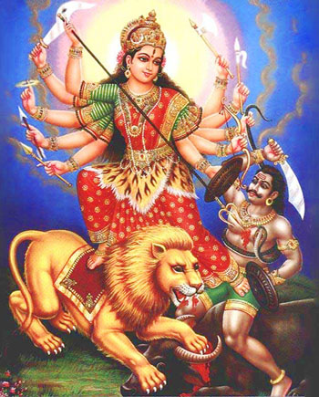

Początek świata
Dawno temu mędrcy wedyjscy opisywali Wisznu jako tego, którego byt rozciąga się na cały wszechświat. Gdy ów wszechświat powstał, był on zaledwie jednym z nasion wytryskających z ciała Wisznu, unoszących się w Oceanie Stworzenia niczym grona bąbelków.
Każde z nasion stało się złotym jajem, w które Wisznu wstępował jako Purusza, kosmiczny człowiek. Pojawiając się w jego ciemnym, pustym wnętrzu, przemieniał on pierwotną materię w ziemię, wodę, ogień, powietrze i przestrzeń eteru. W miare
rozwoju jego uniwersalnego ciała powstawały kolejno elementy świata fizycznego i mentalnego.
Hymny wedyjskie opowiadają o ofierzę Puruszy, kosmicznego człowieka, o świcie wszechświata. Bogowie przygotowali ofiarę, której
najważnieszy element stanowiła olbrzymia forma samego Puruszy. Z różnych części jego ciała powstały elementy wszechświata: jego usta stały się mową, nad którą panuje bóg ognia Agni; jego nozdrza stały się oddechem i powonieniem, a panuje
nad nimi bóg wiatru Waju; jego oczy stały się wzrokiem, nad którym panuje bóg słońca Surja; ruch powstał wraz z jego nogami, rzeki - z żyłami, umysł zaś - z jego sercem. Brahma i Śiwa stanowili jego intelekt i ego. Podział społeczeństwa
na cztery części - kapłanów, władców, kupców i robotników - odpowiadał jego ustom, ramionom, udom i stopom.
W innych źródłach znajdujemy bardziej szczegółowe opisy tworzenia wszechświata przez Brahmę, boga-stwórcę narodzonego z pępka
Wisznu. Brahma stworzył planety i gwiazdy, a także tysiące półbogów, z których każdy odpowiedzialny był za określoną część kosmicznego ładu. Indra opiekował się deszczem, Waju - wiatrem, Surja - Słońcem, Czandra - Księżycem, a Waruna -
rzekami i oceanami. Bogini Bhumi powierzono Ziemię.
Brahma wraz z bogami stworzyli niezliczoną ilość form życia, między innymi człowieka. Bogom dano władzę obdarzania swych wyznawców wielkimi błogosławieństwami. Są oni siłami stojącymi
za zjawiskami przyrody, jak wiatr, deszcz i sama ziemia. Boginię ziemi Bhumi Hindusi uważają za jedną z siedmiu matek. Jakkolwiek potężni są półbogowie, nad nimi jest Wisznu, i to on stwarza i kontroluje wszystko. Bez niego nic nie mogą
uczynić.
